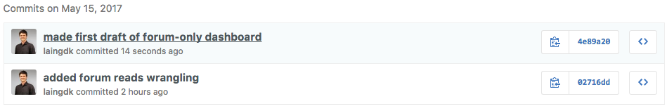
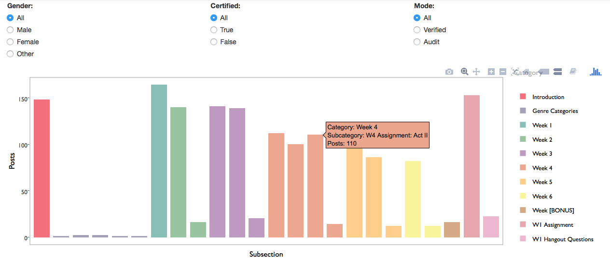
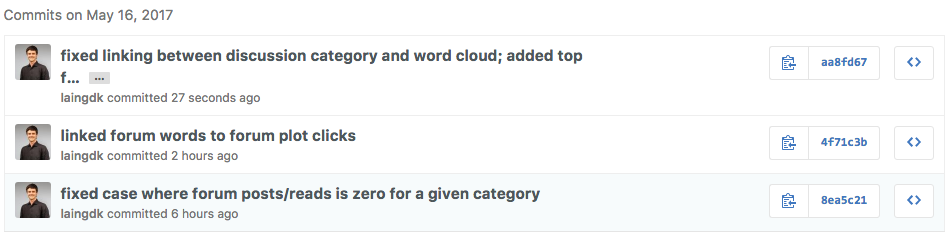
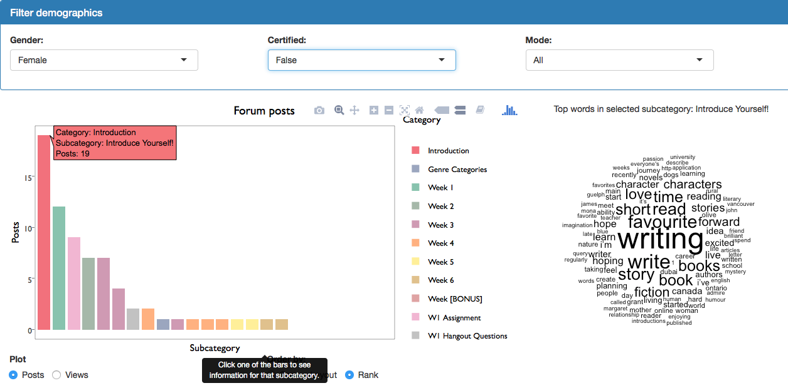
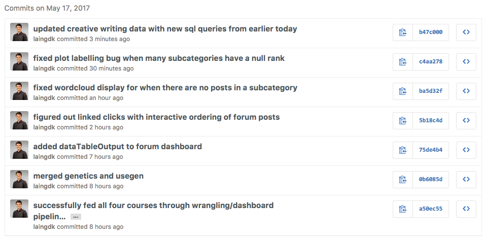
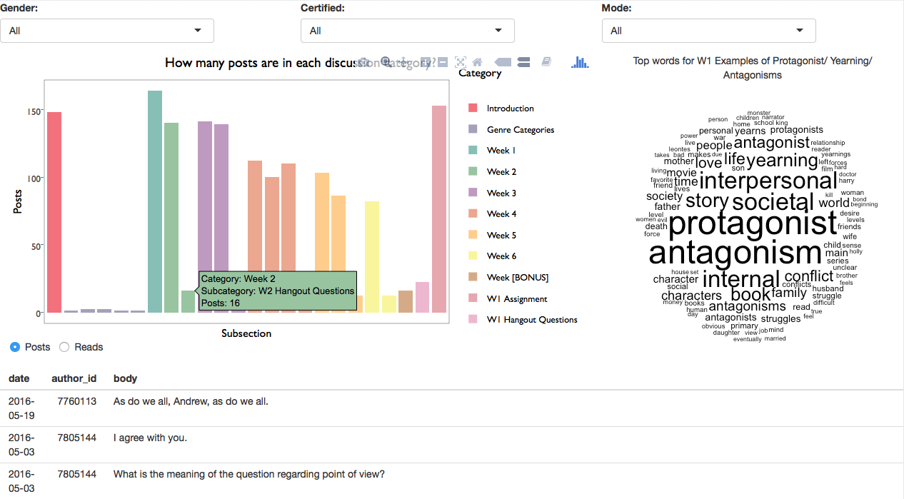
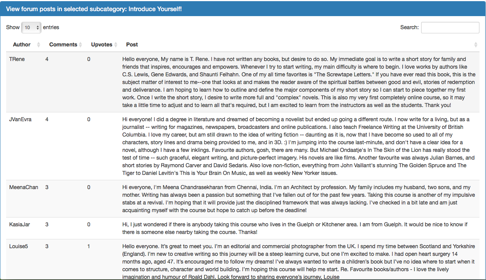
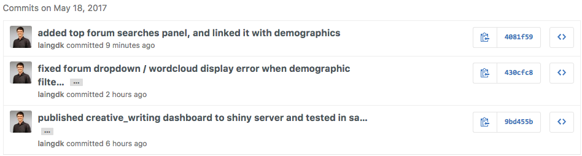
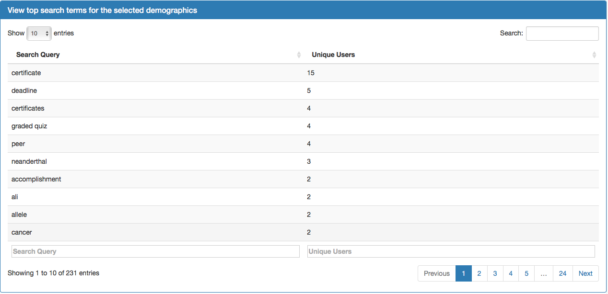

Week 4
Monday May 15
Overview:
- We had a long meeting in the morning with Ido and Sarah to pin down the most important plots that need to be made.
- In the afternoon, I worked on getting the number of read events for each discussion category, and then built a prototype of a dashboard for the forum data.
Git commits:

Updates to key visualizations:

Top priorities for next day:
- Fix cases where there are zero reads/posts for a given category.
- Add wordcloud to dashboard?
Tuesday May 16
Overview:
- I fixed the cases where there are zero reads/posts for a given category.
- I added a wordcloud to the dashboard, and linked it with the discussion subsections.
- I displayed the forum posts in the dashboard (currently no linking or smart ordering).
Git commits:

Updates to key visualizations:

Top priorities for next day:
- Test out the dashboard with other courses.
- Try using Matt’s BigQuery script.
- Re-run database query but include number of likes/pins, so that I can display interesting posts in each discussion category.
Wednesday May 17
Overview:
- I redesigned my SQL queries so that the forum data includes the number of upvotes, reads, and dates.
- I wrangled each of the new forum datasets.
- For each course, I loaded the wrangled data into the dashboard.
- I displayed the top forum posts in the dashboard.
- I added an option for reordering the forum subcategories by their rank, which caused a million bugs, most of which I managed to squish.
Git commits:

Updates to key visualizations:


Top priorities for next day:
- Test my dashboard in the course sandbox.
- Fix bug where the dashboard crashes when the filtered demographics contain no users.
Thursday May 18
Overview:
- I tested my dashboard in the course sandbox.
- I fixed several bugs related to cases when the filtered demographics contain no users.
Git commits:

Updates to key visualizations:

Top priorities for next day:
- Get feedback from everyone on the forum dashboard.